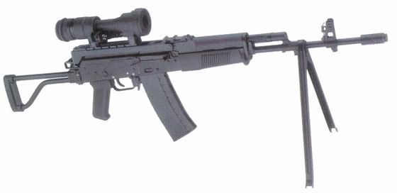
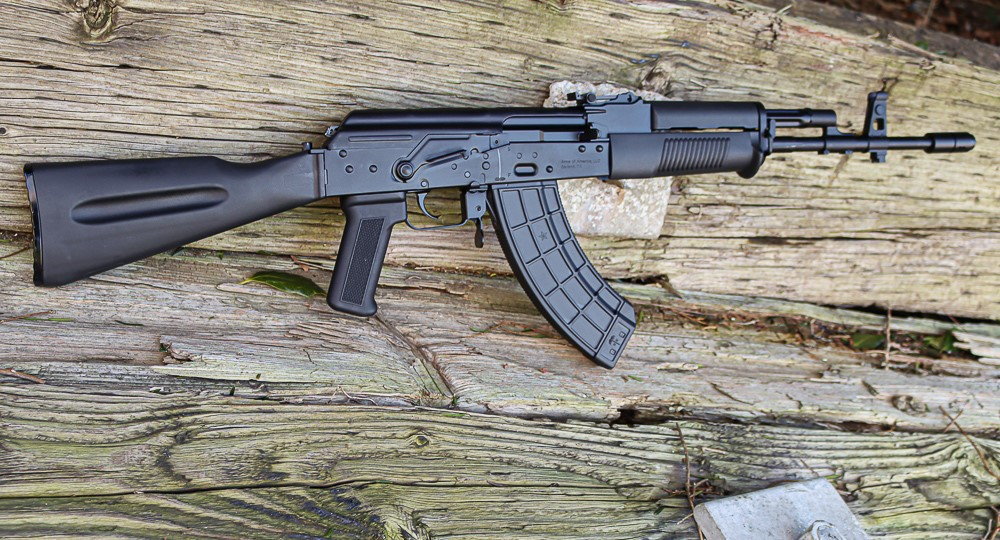

wz. 96 Beryl


Karabinek szturmowy wz. 96 „BERYL” jest indywidualną bronią samoczynno-samopowtarzalną. Zasada działania jest oparta na wykorzystaniu energii gazów prochowych, odprowadzanych przez boczny otwór lufy. Ryglowanie przez obrót zamka na prawo (dwa rygle).
Krabainek wz. 96 Beryl jest bronią automatyczną przeznaczoną dla pododdziałów wszystkich rodzajów Sił Zbrojnych RP. Jest to broń celna, niezawodna, trwała i odporna na wpływ niekorzystnych warunków środowiska. Beryl przystosowany jest również do wystrzeliwania granatów nasadkowych przy użyciu ostrej amunicji.